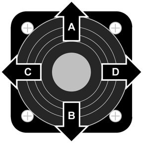

Funktionsbelegung der Bewegungsrichtungen des rechten Bedienhebels

Fig. 2973: Funktionsbelegung der Bewegungsrichtungen des rechten Bedienhebels
Fig. 2973: Funktionsbelegung der Bewegungsrichtungen des rechten Bedienhebels
Bewegungsrichtung | Piktogramm | Betriebsart oder Vorwahl | Kipptaster A) | Funktion |
|---|---|---|---|---|
A | Betriebsart Hebezeug | - | Last an Winde1 senken. | |
B | Alle | - | Last an Winde1 heben. | |
C | Alle | - | Hauptausleger heben. | |
Betriebsart Hebezeug | Nadelausleger heben. | |||
Taste Montagefunktionen | - | Hauptausleger heben. | ||
Taste Montagefunktionen | - | Derrick-Ausleger heben im Derrick-Betrieb. | ||
Taste Montagefunktionen | Hauptausleger heben im Derrick-Betrieb B). | |||
D | Betriebsart Hebezeug | - | Hauptausleger senken. | |
Betriebsart Hebezeug | Nadelausleger senken. | |||
Taste Montagefunktionen | - | Hauptausleger senken. | ||
Taste Montagefunktionen | - | Derrick-Ausleger senken im Derrick-Betrieb. | ||
Taste Montagefunktionen | Hauptausleger senken im Derrick-Betrieb B). |

Funktionsbelegung der Bewegungsrichtungen des rechten Bedienhebels
A) Manche Kipptaster sind mit mehreren Funktionen belegt. Durch mehrmaliges Betätigen des Kipptasters kann die gewünschte Funktion gewählt werden.
B) Diese Funktion ist standardmäßig am linken Bedienhebel. Ausschließlich nach zusätzlicher Vorwahl „Nadelausleger-Verstellwinde“ ist diese Funktion am rechten Bedienhebel.